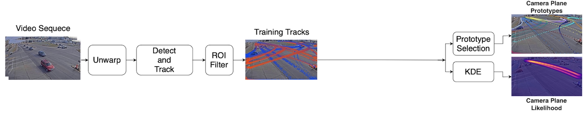
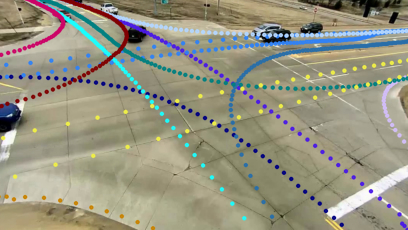

Summary
Shows that back-projecting detected vehicles to the ground plane, instead of analyzing them in the camera image plane, produces more accurate turning movement counts at intersections.
Abstract
Accurate turning movement counts at intersections are important for signal control, traffic management and urban planning. Computer vision systems for automatic turning movement counts typically rely on visual analysis in the image plane of an infrastructure camera. Here we explore potential advantages of back-projecting vehicles detected in one or more infrastructure cameras to the ground plane for analysis in real-world 3D coordinates. For single-camera systems we find that back-projection yields more accurate trajectory classification and turning movement counts. We further show that even higher accuracy can be achieved through weak fusion of back-projected detections from multiple cameras. These results suggeest that traffic should be analyzed on the ground plane, not the image plane
Key Contributions
- Enhances two public ITS datasets and contributes a third, supplying ground-truth turn counts, orthographic projections, and image-to-ground homographies.
- An open-source pipeline for automatic ground-plane turning movement counts.
- A controlled single-camera comparison of image-plane against ground-plane trajectory classification across three datasets.
- A multi-camera extension that fuses back-projected detections from several views through a simple weak-fusion approach.
- Unsupervised probabilistic trajectory modeling in place of heuristic classification.
Method

Results

- Ground-plane classification is consistently more accurate than image-plane analysis for single-camera systems.
- Weak fusion across multiple cameras yields further accuracy gains over any single view.
- Unsupervised probabilistic modeling outperforms heuristic classification methods.
BibTeX
@article{pakdamansavoji2025ground,
title = {Ground Plane Projection for Improved Traffic Analytics at Intersections},
author = {Sajjad Pakdamansavoji and Kumar Vaibhav Jha and Baher Abdulhai and James H Elder},
journal = {arXiv preprint arXiv:2511.12342},
year = {2025}
}